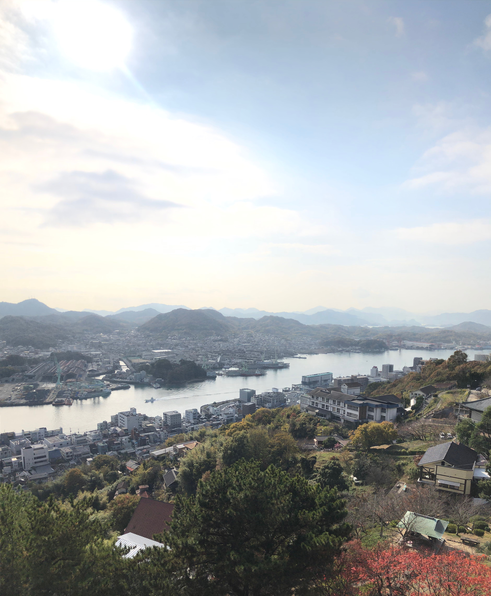
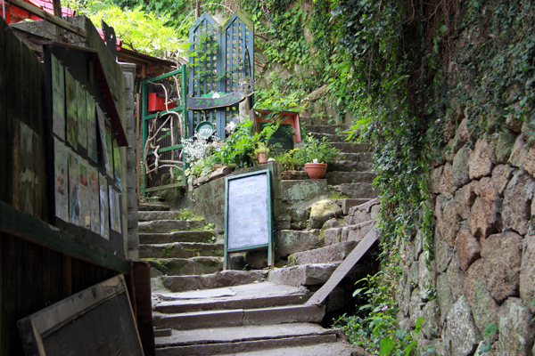

VIEW

Senkoji Park
尾道を見下ろす
ことができる唯一の場所
ここ千光寺公園で
尾道の町を一望しよう
Literary Path
歴史感じる遊歩道
観光と共に尾道の歴史
を楽しみながら学ぼう


Cat Load
猫の町尾道では
猫をモチーフにした
建物やCafeを
お楽しみいただけます

千光寺公園には古き良き風情が数多く残っています。国宝に指定されている寺社も多く点在し、志賀直哉や林芙美子などの有名な小説家のゆかりの地でもあり、尾道の風情と歴史に触れながら観光を楽しむことができます。尾道駅前には林芙美子像が立っており、観光スポットとしても人気です！
千光寺公園は猫の多さでも有名となっており、観光客を出迎え癒してくれる千光寺公園の看板的存在です！種々多様な猫がおり、自分好みの猫を見つけることもできます。猫をモチーフにした猫Cafeや猫の細道という観光地も多く点在し、尾道のおすすめの観光スポットとなっています！
春になると多くの観光客を引き寄せるのが千光寺公園の桜！広島県桜名所ランキング第２位にも選ばれており、尾道水道をバックにシャッターを切る人は跡を立ちません。また、夜になると期間限定で桜がライトアップされ、見る人を魅了します
1686年建立の千光寺は尾道で最も人気の観光地になっています！朱色の本堂と龍宮造りの鐘楼は尾道の代表的な景観であり多種多様なお守りが用意されており、参拝してお買い求めになる方も多くいます！ここ千光寺でお参りして願い事を叶えよう
千光寺公園内には美術館も！ガラス張りが特徴的なこの尾道市立美術館は多くの展覧会を開催しており、観光客にも大人気です。また、ここでしか手に入らないグッズを多数取り揃えておりますので、是非立ち寄ってみてください
尾道の１番の魅力である千光寺公園の「ロープウェイ」！千光寺山の山麓と山頂の間を約3分で運行しており、車中からは尾道市街地はもちろんのこと、しまなみ街道、また天気の良い日は遠く四国までもの絶景が楽しめます
千光寺公園には有名な絶景スポットから隠れ絶景スポットまで数々の絶景スポットがあり、写真を撮る人も多くみられます！天気の良い日は尾道水道が光り輝くため写真を撮るにはもってこいの日です！自分だけの絶景スポットを見つけ、思い出の１枚を撮ろう

| 千光寺公園 | 尾道市立美術館 | |
|---|---|---|
| 平日 (月~金) |
24時間入場可能 (年末年始除く) |
9:00~17:00 (最終入場 16:30) |
| 休日 (土日.祝日) |
24時間入場可能 (年末年始除く) |
9:00~17:00 (最終入場 16:30) |
尾道の新名所のU2!インスタ映えを狙うために若者が多く集まるU2にはおしゃれなランチや雑貨屋さんを楽しむことができ幅広い層に支持されています。また、宿泊施設や自転車の貸出も行っており、U2で借りた自転車を使ってしまなみ海道にサイクリングに行く観光客も多くみられます！
2019年3月にリニューアルオープンした尾道駅！近代的なデザインに設計されており、駅舎の写真を撮る観光客はとても多いです！コンビニ、レストラン、宿泊施設もあり、魅力たっぷりです。尾道駅周辺には尾道ラーメンのお店もたくさんあり、そちらもおすすめです！
国宝に指定されている浄土寺には本堂だけでなくいろいろな魅力があります！浄土寺の山頂には展望台もあるため展望台から眺める尾道水道の景色も最高です！浄土寺では鳩の餌やり体験もすることができ多くの観光客が１袋５０円の餌を購入し、餌やりを楽しんでいます！
尾道商店街は尾道の古き良き風情を最も感じられる場所となっております。古くからあるお店や最近になってできた若者向けのcafeや雑貨屋さんなどもあ利、尾道でしか手に入らない物もたくさん販売しています！また尾道ラーメンのお店もたくさんあり、平日休日かかわらず多くの観光客の行列で賑わっています！
| お車でお越しの方 | 山陽道自動車道尾道インターより約30分 | ||
|---|---|---|---|
| タクシーでお越しの方 | JR尾道駅南口のタクシー乗り場をご利用ください | ||
| バスでお越しの方 | JR尾道駅南口より、「千光寺公園」行、「千光寺公園」下車 | ||
| レンタルサイクルでお越しの方 | JR尾道駅南口のレンタルサイクル乗り場をご利用ください | ||